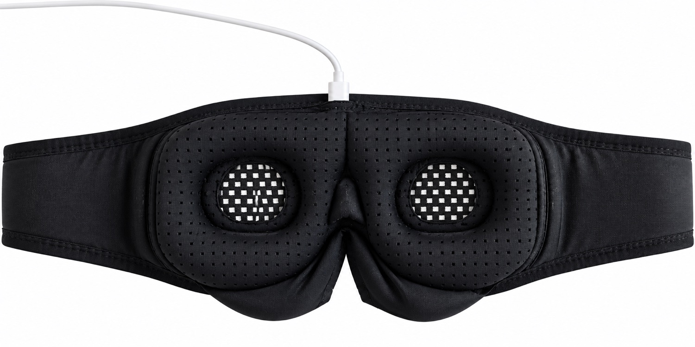
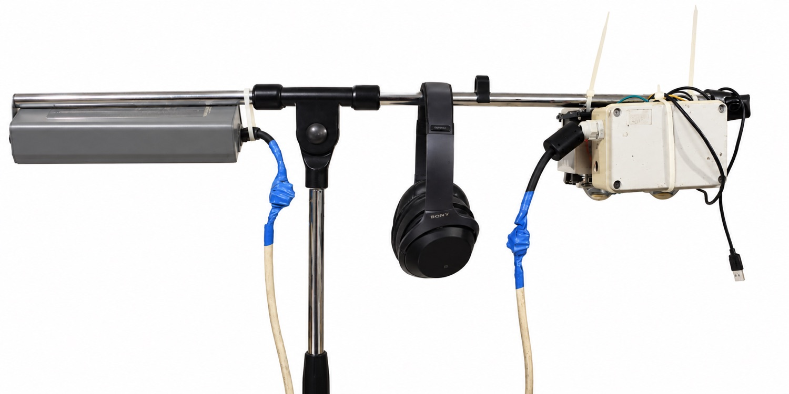
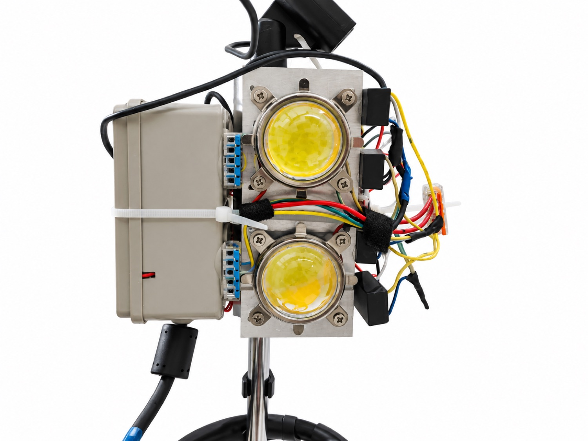
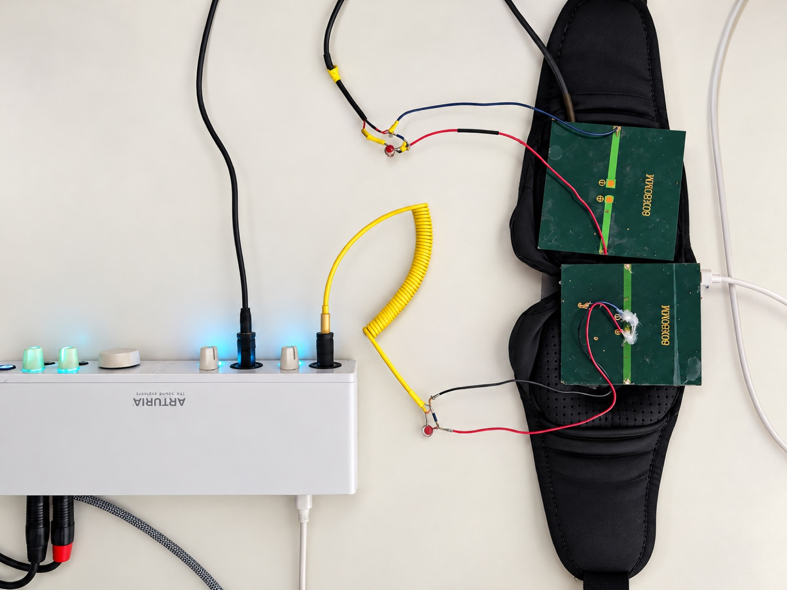

Hardware builder guide
The firmware supports two chip builds: the ESP32-S3 board with a TI TLV320DAC3101 codec, which is where development happens, and the classic ESP32 boards, which still build and run. This page is the pin-level record of both, taken from the config snapshots and drivers in the repository rather than from memory.
ESP32-S3 · YB-ESP32-S3-DAC classic ESP32 · glasses / A1S 3 LED backends 4 codec drivers
Everything on this page exists to flash light at the eyes. Before you build or power anything, read the photosensitivity and epilepsy warning — flicker in the 3–30 Hz band is a real seizure trigger, the 15–25 Hz region is the risk peak, and the firmware enforces no limit of its own.
The two builds at a glance
Four board snapshots exist (sdkconfig.glasses,
sdkconfig.ac101, sdkconfig.es8388,
sdkconfig.yb_s3_dac), selected with
./switch_board.sh <board>. Three of them are the same
chip; only the S3 snapshot changes the toolchain target, so switching to or
from it fully reconfigures the build directory.
| Build A — ESP32-S3 | Build B — classic ESP32 | |
|---|---|---|
| Board | YelloByte YB-ESP32-S3-DAC (ESP32-S3-WROOM-1 N16R8) | "glasses" (generic ESP32 + passive I2S DAC) or AI-Thinker ESP32-A1S, in AC101 or ES8388 variant |
| Flash / PSRAM | 16 MB flash, 8 MB octal PSRAM | 4 MB flash; no PSRAM or 4 MB quad |
| Partition table | partitions_16mb.csv |
partitions.csv |
| Audio output stage | TLV320DAC3101 codec: headphone jack and stereo class-D speaker amp | Passive I2S DAC (glasses), or AC101 / ES8388 codec with onboard headphone and speaker amp (A1S) |
| Codec control | I2C, address 0x18 |
None (glasses) · AC101 0x1A · ES8388 0x10 |
| LED backend seeded | NeoPixel (WS2812) on one data pin | NeoPixel (glasses) · Direct LEDC PWM (A1S snapshots) |
| microSD | Onboard slot, enabled by default | Pins recorded; A1S boards have a slot, the glasses build depends on your wiring |
| mDNS name seeded | esp32-ave-mobile.local |
esp32-ave.local |
| LED frame streaming | RMT over GDMA — no CPU refill to starve | No DMA on RMT; the CPU refills the FIFO mid-frame, mitigated by claiming all 8 memory blocks for one channel |
| I2S clocking | Fractional divider synthesises exact audio rates from PLL_F160M | Needs the APLL whenever MCLK is wired; the default 160 MHz PLL cannot integer-divide to 44100 × 256 |
| GPIO numbering | 0–48, no 22–25 | 0–39, no 24 and no 28–31; 34–39 input-only |
Divergences are deliberately kept as per-target modules selected by
IDF_TARGET in main/CMakeLists.txt, and every one
of them is catalogued in legacyesp32.md, which doubles as the
removal checklist for the day classic support is dropped. The LED driver is
the clearest case: the S3's non-DMA RMT path would actually be
worse than the classic chip's (192 versus 512 symbols of FIFO), so it is
DMA that makes the S3 better, not the peripheral — which is exactly why it
cannot be one file with a constant in it.
Build A — ESP32-S3 (YB-ESP32-S3-DAC)
This board is an off-the-shelf part that happens to carry the whole
combination the project would otherwise need a custom PCB for: an ESP32-S3
module, a TLV320DAC3101 codec driving both a headphone jack and a stereo
class-D speaker amp, and a microSD slot. Select it with
./switch_board.sh yb_s3_dac; the pin seeds live in
sdkconfig.defaults.esp32s3.
Parts
YelloByte YB-ESP32-S3-DAC
MCU, codec, headphone jack, speaker amp, microSD and USB on one board — the whole combination this project would otherwise need a custom PCB for.
2 × M5Stack NeoHEX
The light source, one per eye. The ring structure is what gives each eye an independent inner and outer zone, so a session can drive them at different phases.
Diffuser
Ping-pong-ball halves, thin opal acrylic, or 2–3 layers of tracing paper. Bare LEDs are uncomfortably bright and the visible dot pattern defeats the effect.
Sleep mask with built-in headphones
Bought whole and reused: it is the light-blocking enclosure and the headphones in one. A 3D-printed frame or lens-less swim goggles work too, but then you supply the headphones separately.
Headphones (3.5 mm TRS)
A binaural beat is produced by the listener's own auditory system from two separated carriers, so a speaker physically cannot deliver one.
microSD card
Holds the speech phrase library and background tracks, so a session runs with no browser attached at all. Optional, but transformative.
5 V USB supply or power bank
Powers the board and both LED strings. Size it from the LED count, not the MCU — see Power.
| Part | What it is for |
|---|---|
| YelloByte YB-ESP32-S3-DAC board | MCU, codec, headphone jack, speaker amp, microSD slot and USB in one. 16 MB flash holds the app, the web UI and an 8 MB session filesystem. |
| 2 × M5Stack NeoHEX (37 × WS2812 each) | The light source, one per eye. 37 pixels = 1 centre + rings of 6, 12 and 18, which is what gives each eye an independent inner and outer zone. |
| Diffuser | Spreads the light into a field instead of visible dots. White ping-pong-ball halves, thin opal acrylic, or 2–3 layers of tracing paper. Not optional — bare LEDs are uncomfortably bright and the dot pattern defeats the effect. |
| Frame or goggles that block ambient light | 3D-printed, or modified swim/safety goggles with the lenses removed. Keep the LEDs ≥ 25 mm from closed eyelids to avoid focal discomfort, and leave a cutout so the USB port stays reachable. |
| Headphones (3.5 mm TRS) | Required for binaural beats — the beat is produced by the listener's own auditory system, so a speaker cannot deliver it. |
| microSD card, FAT32 | Optional but transformative: holds the speech phrase library and background tracks so a session runs with no browser attached. |
| 5 V USB supply or power bank | Powers the board and the LED strings. See Power. |
Pin map
| Function | GPIO | Note |
|---|---|---|
| I2S BCLK (bit clock) | 5 | Also the codec's PLL reference on this board — see MCLK below |
| I2S LRCLK / WS | 6 | |
| I2S data, ESP32 → codec | 7 | Playback only; DIN is -1 |
| I2S MCLK | -1 (unused) | GPIO4 reaches the codec's MCLK only through solder bridge JP2, which ships open |
| Codec I2C SDA / SCL | 8 / 9 | Port 0 at 100 kHz, 7-bit address 0x18 |
Codec ~RESET | 21 | The 3-pad jumper's default-closed side. Must be pulsed by firmware — see hazards |
| microSD CS / MOSI / CLK / MISO | 10 / 11 / 12 / 13 | SPI; CONFIG_BG_SDCARD_ENABLED=y on this board |
| LED data | 18 | Both NeoHEX boards chained in series, 74 pixels total |
| Snapshot / stop button | -1 (disabled) | The Kconfig default of 5 is this board's I2S bit clock. The board's own B button is GPIO0, which is also a strapping pin |
| Onboard status LED | 47 | Board feature, not driven by the flicker engine |
| Amplifier enable | -1 | No external amp enable line on this board |
Audio output, and the gain choices behind it
The codec is a paged register device: register 0x00 on every
page is PAGE_SELECT, and playback init touches page 0 (clocks,
I2S format, DAC power, digital volume) and page 1 (analog routing, output
drivers, analog volume). Three choices in that driver are deliberate and
worth understanding before you change anything:
-
The codec PLL runs from BCLK, not MCLK. Because
JP2ships open the chip receives no MCLK at all, so the driver clocks its PLL from BCLK — which is also what the board vendor's own shipping example does. BCLK is Fs × 32 here, because I2S is configured as 16-bit stereo. Only set an MCLK pin if you have actually closed that bridge. -
It wants Philips I2S framing, not the left-justified
framing the other supported codecs use.
audio_manager.cselects this per codec. - The class-D gain is held low on purpose. The gain field is two bits with four values (6 / 12 / 18 / 24 dB). It sits at 12 dB — raised one step from the 6 dB minimum at the owner's request, which is +6 dB and four times the electrical power, because the field cannot express the 9 dB that was actually wanted. TI's datasheet example uses 24 dB. This amp can deliver 1.3 W into 8 Ω at full tilt, which will destroy the small speakers typically wired to the JST connectors. Set listening level with the digital DAC volume and the −9 dB analog stage, both reversible from the web UI; if you ever need a finer step than the coarse field allows, the speaker analog volume is the 0.5 dB lever on that path.
Build A wiring
0x18, plus the active-low
hardware reset on GPIO21, which firmware must pulse before the first
transaction. The microSD slot sits on SPI (CS 10, MOSI 11,
CLK 12, MISO 13). The light side is a single data pin: GPIO18
feeds the first NeoHEX board's DIN, and that board's DOUT feeds the
second, so 74 WS2812 pixels hang off one wire. 5 V and ground are
shared between the board and both LED boards. Note that GPIO12 is the SD
clock and GPIO21 is the codec reset, so neither is available for LEDs on
this board.
Build B — classic ESP32
Three snapshots cover the classic chip. The glasses build is a generic ESP32 driving a WS2812 matrix with a passive I2S DAC and no codec driver at all; the two A1S builds target the AI-Thinker ESP32-A1S audio board, which exists in AC101 and ES8388 codec variants and has an onboard headphone amp and speaker amp. Cheap and widely available, but bulkier than the S3 board.
| Function | glasses | ac101 | es8388 |
|---|---|---|---|
| Codec | none (passive I2S DAC) | AC101, I2C 0x1A | ES8388, I2C 0x10 |
| I2S BCK | 26 | 27 | 26 |
| I2S WS | 25 | 26 | 25 |
| I2S data out | 22 | 25 | 22 |
| I2S MCLK | -1 | -1 | -1 in the snapshot — but the ES8388 driver documents MCLK as required, see below |
| Codec I2C SDA / SCL | — | 33 / 32 | 33 / 32 |
| LED backend | NeoPixel | Direct LEDC PWM | Direct LEDC PWM |
| LED pins | data 12, 48 pixels as a 12 × 4 grid |
ch1–4 = 22, 23, 18, 21; ch5–8 disabled |
ch1–8 = 12, 13, 14, 15, 2, 4, 16, 17 |
| microSD SPI | CS 5, MOSI 23, MISO 19, CLK 18 | Same Kconfig defaults; check them against your board before enabling | |
Two classic-chip constraints shape those numbers. MCLK can only be routed to
GPIO 0, 1 or 3 — a hard pin-mux limit, which is why the ES8388 boards
are stuck with MCLK on GPIO0 when they use it at all; the S3 has no such
restriction. And the es8388 snapshot can legitimately drive LEDs
on GPIO 16 and 17 precisely because that board has no PSRAM, which on a
PSRAM-equipped board those pins would be part of.
LED topology and per-eye masks
The engine exposes eight logical LED channels, addressed by
a bitmask in the session file where bit 0 is LED1. A channel is not a
pixel: CONFIG_LED_CHANNEL_MAP assigns a channel index to every
physical pixel, so a channel is a zone of arbitrary shape. The eye
builds populate four of the eight — two zones per eye.
The eye split was established by measurement rather than by reading the harness: each channel was driven at its own distinct rate in one session and each eye's photocell spectrum then named the channels it could see, with 30–43 dB of separation. The result is unambiguous — {LED1, LED2} is one eye and {LED3, LED4} is the other, so the per-eye masks are 3 and 12.
A photocell that can see both an inner and an outer zone measures the residual of a near-cancellation, not the flicker. On a verified antiphase session the two sensors read fundamentals 25.8 dB apart with a relative phase of +178.1° against a commanded 180 — the design working, not a fault — and per-cycle timing analysis of the cancelling channel becomes impossible. Point each sensor at one zone.
Form factors: glasses and lamp
The chip build and the physical build are independent choices. Two end products are documented:
Glasses (wearable)
LEDs mounted in front of the eyes behind a diffuser, audio through the board's headphone jack, powered from USB or a battery. Uses the NeoPixel backend on a single data pin. This is the build both pin maps above describe, and the one the session library is authored for.
Lamp (room device)
A high-power COB emitter aimed at the room instead of the eyes, plus
speaker output; mains-powered and fixed in place. Uses the
Direct LEDC PWM backend: the ESP32 emits only a 0–100%
PWM control signal at 25 kHz into a constant-current LED driver's
dimming input, and the driver does all the high-current switching. A
dual-channel warm/cold COB pair gives four driver channels, one per
LED_DIRECT_PIN_CH1..CH4.
The wearable build, built

Shopping list for the mask build
Five things, around €50–60 all in. Marketplace listings rot quickly, so each row gives a durable source where one exists and a search term where it does not — search the term rather than trusting a link that may already be dead.
| Item | Qty | Where / what to search for |
|---|---|---|
| YelloByte YB-ESP32-S3-DAC | 1 | ricardo.ch (the maker's own
marketplace listings). Also on AliExpress for roughly €15 — search
YB-ESP32-S3-DAC. Make sure you get the DAC variant; the
plain YB-ESP32-S3 has no codec. |
| M5Stack NeoHEX, 37 × WS2812 | 2 | shop.m5stack.com
— one per eye. Clones are on AliExpress; search
NeoHEX 37 RGB LED WS2812. |
| Sleep mask with built-in headphones | 1 | The enclosure and the audio in one purchase. Search
sleep mask bluetooth headphones 3D eye mask and pick one with
moulded eye cups — the recess is what gives you the ≥ 25 mm standoff
and somewhere to put the boards. Wired or Bluetooth both work; you are using
the shell and the drivers, not its electronics. |
| USB-C cable | 1 | Power, flashing and serial log. Any data-capable cable — charge-only cables will power the board but will not flash it. |
| microSD card, FAT32 | 1 | Optional. Any small card; capacity is irrelevant next to the few MB a speech library needs. |
| Other boards that work. The firmware also runs on the AI-Thinker ESP32-A1S (cheap, bulkier, onboard headphone and speaker amp, AC101 or ES8388 variant) and on a generic ESP32 with a passive I2S DAC — see Build B. HiFi-ESP32 and Sonatino are smaller modern alternatives with an ES8388-class codec and easier battery integration, if you can find one. A plain 4×12 WS2812 matrix (48 pixels) is a cheaper substitute for the two NeoHEX boards. | ||
No battery yet. The device runs from a USB power bank today. On-board battery support — a cell, charging and a fuel gauge the firmware can read — is not implemented, so there is no low-battery handling and nothing to report state of charge. Treat it as a tethered device for now.
The lamp build, built


Shopping list for the lamp build
A room device rather than a wearable — a therapy-lamp class build, mains powered and fixed in place. Same convention as above: a durable source where one exists, a search term where the listing will rot.
| Item | Qty | What to get, and why |
|---|---|---|
| ESP32 audio board | 1 | AI-Thinker ESP32-A1S is the cheap default and has an
onboard speaker amp, so a room device needs no separate amplifier.
Search ESP32-A1S audio kit. The YB-ESP32-S3-DAC works
too and sounds better. |
| COB LED emitter | 2 | 100 W warm/cold white COB, ~30 V forward at full
current — search 100W COB LED dual colour warm cold.
Each emitter is dual channel (warm + cold, independent), so
two emitters give the four channels the firmware drives. Drop to
10–50 W for a desk-class device and the heatsink and PSU shrink with
it. |
| Constant-current driver | 4 | Mean Well NLDD-1400HW — 1400 mA out, 2–52 V out, 12–54 V in, with a PWM dimming input. One per channel. Match the driver current to the emitter's rating: NLDD-700H or NLDD-350H for lower-current LEDs. |
| AC adapter | 1 | 220 V → 12 V DC, 200–400 W. 200 W covers a 100 W COB plus everything else; 400 W leaves margin for two. Buy a quiet one — a noisy supply is audible as hum in the speakers. |
| Buck converter | 1 | 12 V → 5 V, 1 A is plenty (LM2596 / MP1584). Feeds the ESP32 from the same rail as the LEDs. Trim it to exactly 5.0 V before connecting the board — overvoltage kills it. Do not go 12 V → 3.3 V directly; dev boards expect 5 V upstream. |
| Active heatsink + fan | 1 | Sized for a 100 W COB; the usual kits hold two emitters and include diffuser-lens mounting. Required at 100 W. Passive is feasible to roughly 50 W with a large finned sink. |
| Inline fuse | 1 | On the 12 V side, ~1.5× expected draw — about 10 A for a 100 W LED load. |
Assembly order
- Solder leads to the emitters. Four pads each: warm +/− and cold +/−. Silicone-insulated 22 AWG handles 1.4 A per channel and survives the iron. Tin pad and wire separately, then join quickly — COBs do not enjoy being heated.
- One driver per channel. Driver
+OUT/−OUTto the matching channel pair. Keep runs under 20 cm. All four drivers share the +12 V input rail; each keeps its own dimming line. - Dimming lines to four GPIOs, defaults
LED_DIRECT_PIN_CH1..CH4= 12, 13, 14, 15, plus a shared ground between the drivers' dimming lines and the ESP32. Build with the Direct LEDC backend. - Stack the optics: heatsink (fan facing out) → thermal paste → COB → diffuser lens. Space the two emitters for an even field at the distance someone will actually sit.
- Wire the buck from the 12 V rail to the board's 5 V input — after trimming it to 5.0 V.
- Mains last: 220 V adapter → 12 V rail → splits to the four drivers and the buck. Fuse the 12 V side.
- Flash and test before closing the case. Exercise each
channel on its own with a
.ledcusingmask1, 2, 4 and 8 in turn, and confirm all four respond.
No USB cable is needed in normal operation — the buck feeds the board from the same rail as the LEDs. The three hazards this build adds are below.
- Mains. The AC side must live in an insulated enclosure with strain relief on the cord and no exposed conductors, and the DC rail wants an inline fuse sized around 1.5× expected draw.
- Emitter brightness. A 100 W COB is intense enough to damage eyes. Never look at the bare emitter without its diffuser, even briefly.
- Heat. The heatsink runs at 60–90 °C in operation. Active cooling is required at 100 W; passive is feasible to roughly 50 W with a large finned sink.
Power
- Glasses, USB. A 5 V USB supply or power bank feeds the board, and the LED boards share that 5 V rail and ground. A 1000 mAh-plus bank runs a session comfortably. Keep the USB port reachable through the frame so you can re-flash without disassembly.
- Glasses, battery. A single 18650 Li-ion cell with a protection board, or AA/AAA cells through a boost converter. Whether the cell can connect directly depends on the board: some audio boards have a JST-PH battery input and an onboard charger, others do not. Check your board's documentation rather than assuming.
- Lamp, mains. A 220 V AC adapter produces a 12 V DC rail that splits between the constant-current LED drivers and a 12 V → 5 V buck converter feeding the ESP32 board. Trim the buck's output to exactly 5.0 V before connecting it — over-voltage destroys the board. Do not feed 12 V to a 3.3 V input; most ESP32 dev boards expect 5 V upstream of their own regulator.
- Signal-wire note. On LED data runs longer than about 10 cm, a 470 Ω resistor in series with DIN helps signal integrity. For a driver's dimming input, remember to share ground between the driver and the ESP32.
Hazards worth knowing before you power up
GPIOs the firmware refuses outright
Pin assignments are runtime settings reachable over an unauthenticated
POST /api/settings, and the IDF helper
GPIO_IS_VALID_GPIO answers "does this pad exist on this die",
not "is this pad free" — so the pads bonded to the SPI flash and the
PSRAM pass it. Assigning one of those is not a bad setting, it is a remote
brick: the value reaches NVS before the reboot that applies it, no driver
stops it (RMT, LEDC, I2S and I2C each log a warning about a reserved pin and
then mux it anyway), and a board that cannot read its own flash
cannot be talked out of it over the air — it needs USB and a boot
button. Nothing legitimate wants those pins, so the firmware refuses them.
Two details make that guard non-obvious. The reserved-pin mask has to be
snapshotted at boot, before any driver starts, because the same mask
is what drivers use to record "I own this pad now" — validated live it would
reject the very pin map the device is currently running on. And on this
particular S3 board the snapshot has a hole: the PSRAM data lines
D4..DQS are driven on every PSRAM access but are absent from the
mask, because IDF only reserves the MSPI data lines when the flash
is octal, and here DIO flash sits next to OPI PSRAM. They are patched in from
the SoC's own pin header. There is deliberately no classic-ESP32 equivalent —
there the quad-PSRAM driver reserves the full set at runtime.
Pin defaults that are claims on real pins
A default written for one board is not inert on another, and a collision does not fail loudly — it degrades the peripheral that was already there. This cost hours twice during S3 bring-up:
-
button_gpiodefaulted to 5, which on the YB-ESP32-S3-DAC is the I2S bit clock. Configuring it as a button input degraded BCLK just enough that the codec still locked its PLL — a PLL averages over many cycles — but could never latch a sample. The symptom was perfect clocks, a working internal beep, a verified data line, and total silence. -
sd_csdefaulted to 5 too, because the SD pin symbols used to be gated on the SD feature being enabled. With SD off the symbols did not exist, so the seed fell through to hardcoded classic-board pins. Those gates are gone: pins must be seedable even when the feature is off.
settings_init() now runs a conflict check that logs an ERROR
naming both claimants of any shared GPIO. It only warns — an inactive
backend's pins are harmless — but it turns this failure mode into one line in
the boot log. Read that line.
The codec that answers nothing
On the S3 board GPIO21 is wired to the codec's ~RESET through a
solder bridge that ships closed, and the pin comes up
floating — which holds the codec in reset so it ACKs nothing. The whole I2C
bus then reads as empty. It presents as "no I2C devices found", which looks
exactly like a wiring fault, and a software reset over I2C cannot help
because it needs working I2C to begin with. The driver pulses the pin before
the first transaction; if you move the jumper to its other side, set
AUDIO_CODEC_RESET_GPIO to -1.
Speaker power versus speaker size
Covered in Build A above, and worth repeating as a hazard: 1.3 W into 8 Ω from the class-D amp will destroy the small speakers usually wired to this board's JST connectors, and these boards are typically used right next to someone's head. The coarse gain is at 12 dB of a possible 24. Raise it only after checking what your speakers can take.
Flashing and first boot
The first deploy must be over USB, because OTA cannot change a partition table. After that, app updates go over the air.
source ./activate.sh # ESP-IDF v5.5.2 environment
./switch_board.sh yb_s3_dac # or glasses | ac101 | es8388
idf.py build
./flash_all.sh --port /dev/tty.usbserial-XXXX
flash_all.sh is the only thing that lays down the whole layout:
bootloader, partition table, the otadata seed, the main app into
ota_0, the standalone minimal OTA updater into ota_1,
and the web UI into the storage SPIFFS partition. It derives
every offset at run time from the build rather than hardcoding them — which
matters, because the bootloader offset is 0x1000 on the classic
ESP32 and 0x0 on the S3 — and it re-targets the updater project
to the same chip, since a wrong-chip updater in ota_1 would leave
the board unable to recover over the air. Use --dry-run to see
the esptool command without flashing.
idf.py build prints a standing
Part 'ota_1' ... too small for binary on both targets.
ota_1 deliberately holds the minimal OTA updater, not a second
copy of the app, so it is sized for the updater. Both partition tables use
that same dual-boot model.
Partition layout
| Partition | 4 MB (classic) | 16 MB (S3) | Holds |
|---|---|---|---|
nvs | 16 KB | 16 KB | Runtime settings: every pin, codec and backend choice |
ota_0 | 2 MB | 3 MB | The main app |
ota_1 | 704 KB | 704 KB | The minimal OTA updater only |
storage | 512 KB | 2 MB | Web UI bundle (SPIFFS) — not updated by OTA |
cfgfs | 512 KB | 8 MB | The .ledc session library |
coredump | 256 KB | 256 KB | Panic dumps, retrievable over Wi-Fi |
The S3's extra flash buys filesystem room rather than a second app slot, with
about 2 MB of tail left unallocated for a future dedicated audio
partition. Both filesystems are SPIFFS, whose mount time grows with
partition size — if an 8 MB cfgfs ever makes boot
noticeably slower, the recorded intent is to migrate it to LittleFS rather
than shrink it. Bulk audio belongs on the SD card, not in
cfgfs.
First boot
-
With no Wi-Fi configured, the device raises a SoftAP named
ESP32-AVE-Setup(WPA2 passwordentrain123). Connect and browse tohttp://192.168.4.1. -
Set your SSID and password in Settings. On the next boot it joins as a
station and advertises itself over mDNS, so
http://esp32-ave.localreaches it whatever address DHCP handed out. The S3 snapshot seeds a different name,esp32-ave-mobile.local, deliberately — two devices claiming one.localname knock each other offline. - Confirm the LED boards light on boot, and check the log for the pin-conflict ERROR line described above.
-
To force setup mode later, hold the configured button during power-on or
reset. It is active-low against the chip's internal pull-up. On a board
where the button is
-1, that escape hatch does not exist — recover over USB.
Afterwards: ./ota_flash.sh <ip> pushes a new app over
Wi-Fi, and ./flash_web.sh rebuilds the web UI and flashes only
the storage partition. The web UI lives in SPIFFS, not in the
app image, so OTA alone leaves the device serving the old bundle.
Measuring what you built
A build is not finished when it lights up. The things that decide whether a session does what it claims — how far the light lags the sound, whether a 10 Hz flicker is 10 Hz, whether two eyes are in phase or antiphase — depend on your wiring, your LED backend and your diffuser, and none of them are visible by looking. They are, however, cheap to record. Everything on measured results came off the rig below.

Parts
| Item | Qty | Notes |
|---|---|---|
| Audio interface with Hi-Z / instrument inputs | 1 | The input type matters more than the brand — see below. Two inputs measures light only; four lets you capture the device's audio at the same time, which is what an audio-to-light offset needs. Record 24-bit: a long 16-bit take can overflow a WAV's size field. |
| Photovoltaic panel | 2 | Small — the pair pictured are 80 × 60 mm. Search
mini solar panel 5V. The voltage rating is irrelevant;
you are reading its waveform, not powering anything from it. |
| 100 nF capacitor | 2 | In series with one leg of each panel, to block the DC the cell produces under ambient light. Not optional — see below. |
| Jack leads | 2 | Whatever your interface takes. Polarity sets the waveform's sign, which the analyser can invert, so getting it backwards breaks nothing. |
| Isolated USB adapter | 1 | For the device. Strongly recommended — see the ground-loop note. |
Building it
- Solder a 100 nF capacitor in series with one leg of each panel, and the panel's two leads to a jack. Keep the two channels identical: any difference between them shows up as a fake inter-eye offset.
- Tape one panel over each eye cup, facing the LEDs, as close to where an eye would be as the build allows. Note which LED zone each panel sits over — the analyser's channel map needs it, and the sensor's position along the LED chain is itself worth writing down (below).
- Plug each into its own input and set that input to Hi-Z / instrument, not line.
- Power the device from an isolated USB adapter, not from the same computer as the interface.
- Check the floor before trusting anything: record a few seconds with the LEDs dark and look at 50 Hz (or 60 Hz). On this rig the line sits at −87.6 dBFS, giving a sensor signal-to-noise of +45.2 dB and +41.8 dB.
Why those two choices matter
Hi-Z, not line. On a line input (~20 kΩ) the series capacitor differentiates — corner around 80 Hz — and the capture shows edge spikes instead of a brightness envelope. The harmonic ladder of a 50 % square flattens to 1 / 0.91 / 0.86 / 0.82 / 0.79, and every amplitude or brightness number becomes meaningless. On a high-impedance input the same signal reads 1 / 0.33 / 0.20 / 0.14 / 0.11, matching theory to within 0.01. If your interface has no instrument input, the rig will produce confident, wrong numbers rather than obviously broken ones.
Isolate the device's USB. Sharing a ground with the recording computer put a 10 Hz LED component into the audio channels at +44 dB — which looked exactly like a firmware crosstalk bug and was chased as one. On an isolated adapter it drops to +16.9 dB, which is 39.6 dB below the audio carrier and not worth chasing.
A solar cell is a convenient photodiode. Large area, no
bias supply, no amplifier, output at a level an instrument input is happy
with, and bandwidth orders of magnitude beyond the 100 Hz ceiling of
anything this device emits. It also has the polarity you want: more light
means a more positive voltage, so the waveform rises when the LED turns on.
A phototransistor with a pull-up, or a photodiode into a transimpedance amp,
both pull down on light — tell the analyser with a !
before the channel number (--map "light1=!3") rather than
rewiring.
Taking a capture
Start recording, play a session, stop. The one thing to get right is
where the session's t=0 sits in the recording: the
recorder started when you pressed record, the session started when the device
accepted the POST, and nothing in the file relates the two. A wrong
t=0 makes every timing number downstream meaningless. Author a sync
marker into the .ledc and the analyser finds it; otherwise it
cross-correlates and tells you how much it trusts the result.
Two sensors is the useful minimum — one per eye also gives inter-eye phase,
which is the only way to confirm an
antiphase pair really is in
antiphase. The analyser degrades honestly with less: with no light sensors the
audio-to-light offset is reported as not measurable rather than
guessed, and with one audio channel the binaural beat comes back
BEAT_UNAVAILABLE.
The channel map, the sync methods, what each number means and which survive a
dropped buffer are in tools/avmeasure/README.md, with the practical
cautions summarised under
how to test a session. What the rig
has actually produced is on
measured results.
Making your own variant
The firmware is built to be re-pinned rather than forked. Every codec driver and all three LED backends are compiled into a single image, and the active one is a runtime setting; the Kconfig options only seed NVS on first boot or after a settings reset. So in many cases a new board needs no code at all — just the Settings page.
-
Start from the closest snapshot. Copy the
sdkconfig.<board>that matches your chip and codec, give it your own name, and edit the pin seeds. If you are bringing up a new chip target, add asdkconfig.defaults.<target>too — ESP-IDF loads it automatically and it is the right home for flash size, PSRAM mode and the partition table. - Check every pin against the chip, then against the board. The classic ESP32 has holes at 24 and 28–31 and is input-only above 33; the S3 has holes at 22–25. Beyond that, a pin can exist and still be spoken for by flash, PSRAM, or another peripheral on your board.
-
Lay out the zones with
LED_CHANNEL_MAP. It is a comma-separated channel index per pixel, as long asLED_COUNT; pixels past the end of the list fall back to channel 0. This is where a physical strip becomes logical zones, so it is also where a geometry change lands. - Keep the mirrored eye convention. Number the zones inner/outer on one eye and outer/inner on the other, as described in LED topology. Every shipped session's use of mask 9 and mask 6 depends on it; break it and the two eyes do opposite things.
- Verify the map by measurement, not by inspection. Drive each channel at a distinct rate in one session and read the spectrum at each eye. That identifies the whole map in a single capture and needs no knowledge of how the strip was wired — which is exactly how the current map was established.
-
For a direct-PWM build, set
LED_DIRECT_PIN_CH1..CH8to the GPIOs going to your driver dimming inputs, and useLED_DIRECT_ACTIVE_LOW_MASKfor channels where driving the pin high turns the LED off — common on integrated audio dev boards. Test each channel individually with a session that exercisesmask=1,2,4,8in turn.
What this page could not establish
Four things are recorded here as open rather than guessed at, because the source does not settle them:
- LED5 produces no light either sensor can see (at the noise floor on both). No shipped session uses a mask above 15, so a four-zone build is consistent and the channel is probably simply unpopulated — but that is an inference, not a confirmation.
- LED6 is visible to one eye at about 8 dB below LED1/LED2, despite never being addressed by any shipped session. If channels map onto ranges of one physical pixel chain, channel 6 may alias onto pixels in that eye. Unverified.
- Inner versus outer within an eye rests on the wiring, not on measurement. A single sensor per eye established the eye split conclusively but cannot separate the inner zone from the outer one inside that eye. The ring assignment comes from the channel map's own comments.
-
The
es8388snapshot and its driver disagree about MCLK. The Kconfig help and the driver both state that the ES8388 requires MCLK from the ESP32 (GPIO0 on the classic chip, the only pins MCLK can reach being 0, 1 and 3), yetsdkconfig.es8388shipsAUDIO_I2S_MCLK_GPIO=-1. One of the two is stale. If you are bringing up an ES8388 board and get silence, this is the first thing to check.
Likewise, the project README describes the original reference design as a
XIAO ESP32-S3 board and points at sdkconfig.glasses for its pin
map, but that snapshot is a classic-ESP32 configuration. The pin values in
the Build B table above are what the file actually contains; treat the
board attribution in the README as unresolved.